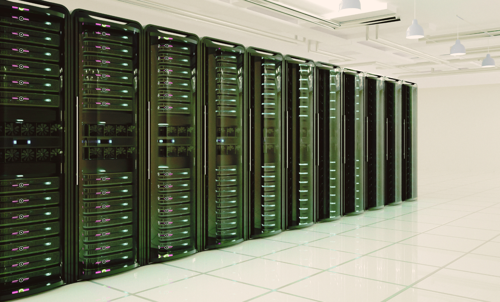
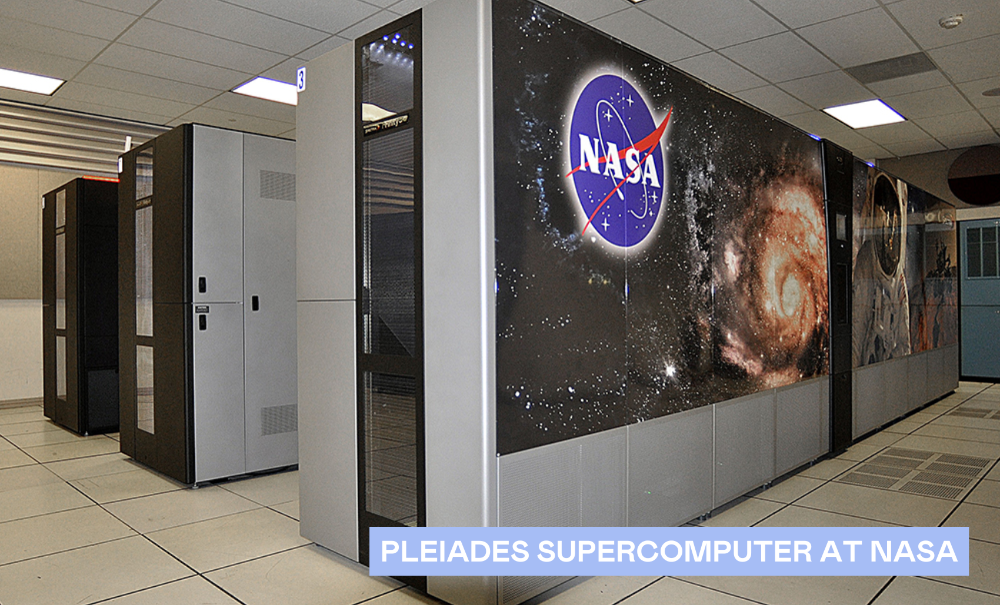

DIFFERENT TYPES OF COMPUTERS
Computers are built for many purposes, and those differences make them versatile enough to support the world we rely on today. But what exactly are they?
| ▼ | On this Page |
|---|
| Date | 06 Nov. 2025 |
|---|
A computer is an electronic device composed of internal and external components that process and store data under the direction of software programs (GeeksforGreeks, 2025).
Computers come in varying sizes for various purposes. Different types of computers are important as each is specifically designed for our needs (Edsurfing, 2024).
The following are categories that are usually different depending on the type of computer one will acquire:
- CPU – acts as the brain of the computer, executing instructions and processing data into meaningful information. (Lenovo, n.d.)
- Memory – an electronic storage area where the computer holds instructions and data for quick access (GeeksforGeeks, 2025)
- Processing Speed – how quickly a computer can execute instructions and complete tasks (Lenovo, n.d.)
- Calculating Power – the computer’s ability to perform complex mathematical or scientific calculations (Strickland, 2010)
I. Types of Computers
Supercomputers – the most powerful computer systems that are capable of handling massive data and performing complex computations at incredible speeds (Kirvan & Lutkevich, 2025)
- Divides complex tasks into smaller parts and processes them simultaneously at very high speeds through parallel processing
- Often used for scientific computations and engineering simulations, such as modeling the universe, predicting weather patterns, and researching nuclear fusion
- Consumes tens of megawatts that can power thousands of homes per day (PASQAL, 2023)
Mainframe Computers – smaller than supercomputers, they still contain substantial memory and powerful data processors capable of handling billions of transactions and simple calculations in real time (IBM, 2023).
- Unlike supercomputers, which are designed for scientific and engineering purposes, mainframe computers are used for business operations such as transaction processing, database management, and enterprise applications (Butler & Zandbergen, 2023)
- Consumes 10 to 100 kilowatts depending on its functionality and modification (Brooks, 2025)

Mini Computers – a smaller and less powerful version of a mainframe computer that handles computing tasks for a smaller user base (Edsurfing, 2024).
- Commonly used by small to medium-sized businesses, laboratories, and educational institutions.
- Depending on the configuration, mini computers may consume 250 watts to 500 watts of power.
Server – provides services and data that are requested by a client through a network (GeeksforGeeks, 2025).
- Continuously waits for client requests, handling them by generating or accessing the needed data, and then returning the response to the client.
- Commonly used to perform services like hosting websites or applications, storing data and files, or managing emails for those accessing the internet.
- Depending on the different circumstances, a single server can consume 120 watts up to 250 watts (Jin et al., 2022).
Workstations – High-performance machines built for professional tasks for a single user that require substantial processing power (Edsurfing, 2024).
- Uses powerful, specialized components to handle complex data quickly and efficiently.
- Often utilized in fields like engineering, graphic design, and animation, where demanding software needs powerful computing performance.
- High-end workstations can consume 400 watts to 600 watts of power (Evergreen Eléctrica S.L.U., 2025)
Microcomputer – a small, compact computer built around a single-chip microprocessor and designed for individual use (Edsurfing, 2024).
- Designed for everyday use and can be utilized for personal computing, business applications, education, and entertainment.
- Depending on the configuration, it can consume 15 watts to 100 watts of power.
| Category | Name & Brand | Build | Size | CPU | Memory | Processing Speed | Calculating Power |
|---|---|---|---|---|---|---|---|
| Supercomputer | Pleiades (NASA) | Clustered rack system | Warehouse-scale installation | Intel Xeon-based nodes (thousands of multi-core CPUs) | Several petabytes of RAM | Millions of cores total, avg. 2.6 GHz | ~7.25 PFLOPS |
| Mini Computer | HPE ProLiant MicroServer Gen11 | Compact square box | 11×10×9 inches | Intel Xeon E-2400 series, up to 4.5 GHz | Up to 128 GB DDR5 | 4-8 cores, up to 4.5 GHz | ~100-300 MIPS |
| Server | HPE ProLiant DL380 Gen11 | Rack-mounted server | 2U rack size | Up to 64 cores, 4.8 GHz (Intel Xeon Scalable Gen 5) | Up to 8 TB DDR5 | Dual socket, PCIe Gen5 support | ~10,000 MIPS |
| Workstation | Apple iMac Pro | All-in-one desktop | 27-inch Retina 5K display | Intel Xeon W (8-18 cores, Turbo 4.2-4.5 GHz) | Up to 128 GB DDR4 ECC | 8-18 cores, 4.2-4.5 GHz | ~11 TFLOPS graphics |
| Microcomputer | Apple MacBook Air M3 | Laptop | 13.6-inch display | Apple M3 chip (8-core CPU) | 8-24 GB unified memory | Up to 3.7 GHz | ~10 GFLOPS |
II. Finding Mr. Right
Several factors must be considered when choosing the right computer. For instance, a large business may not need a supercomputer since mainframes are better suited for managing operations, while workstations outperform microcomputers in tasks like video and graphic editing. Considering these factors helps us select what best fits our needs, budget, and functionality, ensuring computers make our work and lives more efficient.
| ① Purpose | Identify what you are going to use for or who will serve it |
|---|---|
| ② Cost | Set a budget limit and ask yourself if you are able to sustain it in the long run |
| ③ Performance | Check that the computer can handle your tasks effectively and efficiently |
III. Compare & Contrast
Mini computers, microcomputers, workstations, and servers differ in performance and purpose.
| Mini Computers | Offer moderate processing speed and memory, serving small- to medium-sized organizations efficiently while consuming less power than servers. |
|---|---|
| Microcomputers | Have the lowest processing speed and memory capacity, but are ideal for everyday tasks with minimal power use. |
| Workstations | More powerful, built for demanding applications like design or engineering, and offer higher memory and processing capabilities than microcomputers. |
| Servers | Have the greatest processing speed and memory capacity to manage multiple users and large-scale operations, though they consume the most power among the four. |
| Reference |
|---|
- Brooks, O. (2025). NS Mainframe - The Backbone of Enterprise Technology Infrastructure. GPA Calculator. https://www.gpacalculate.com/blogs/mainframe-ns
- Burtler, J., & Zandbergen, P. (2023). Mainframe Computer | Definition, Examples & Operating System [Lesson]. Study.com. https://www.study.com/academy/lesson/what-is-a-mainframe-system-lesson-quiz.html
- Edsurfing. (2024). Different types of computers: All you need to know. Edsurfing. https://www.edsurfing.com/blog/different-types-of-computers-all-you-need-to-know-202
- Evergreen Eléctrica S.L.U. (2025). Power consumption of desktop computer per hour: Complete guide to save energy. https://www.evergreen-electrica.com/power-consuptiom-of-desktop-computer-per-hour?lang=e
- GeeksforGeeks. (2025). Computer memory. https://www.geeksforgeeks.org/computer-science-fundamentals/computer-memory/
- GeeksforGeeks. (2025). What is a computer? https://www.geeksforgeeks.org/computer-organization-architecture/a-simple-understanding-of-computer/
- GeeksforGeeks. (2025). What is a server? https://www.geeksforgeeks.org/what-is-server/
- IBM. (2023). What is a mainframe? IBM Think. https://www.ibm.com/think/topics/mainframe
- Jin, C., Bai, X., Zhang, X., Xu, X., Tang, Y., & Zeng, C. (2022). A measurement-based power consumption model of a server by considering inlet air temperature. Energy, 261, 125126. https://doi.org/10.1016/j.energy.2022.125126
- Lenovo. (n.d.). What is a central processing unit (CPU)? https://www.lenovo.com/ph/en/glossary/what-is-cpu/
- Lenovo. (n.d.). What is processor speed? Lenovo. https://www.lenovo.com/gb/en/glossary/what-is-processor-speed/
- Strickland, J. (2010). What is computing power? HowStuffWorks. https://computer.howstuffworks.com/computing-power.htm
Thank you for your curiosity.